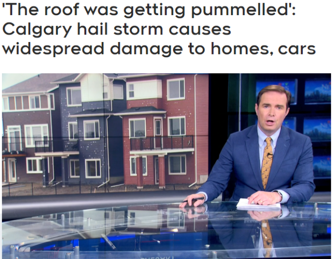
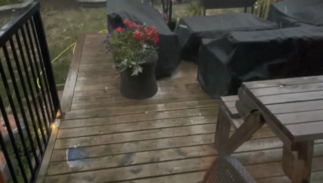
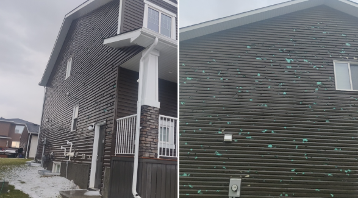
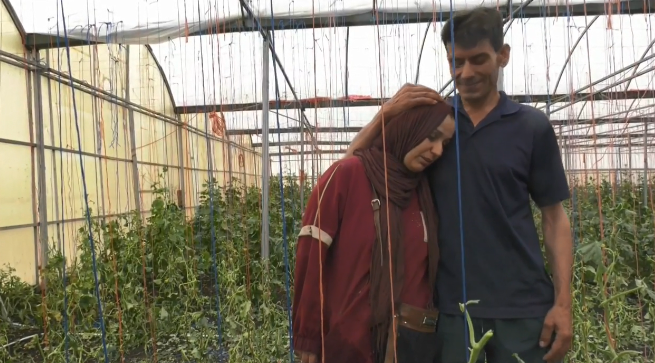
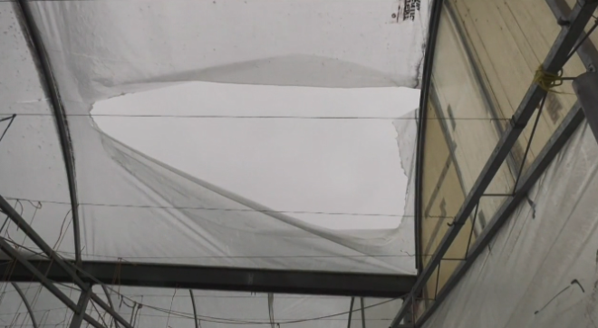
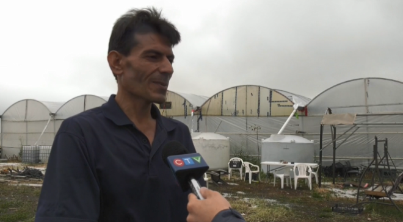
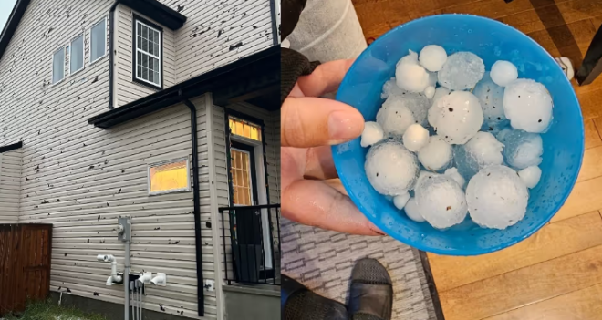
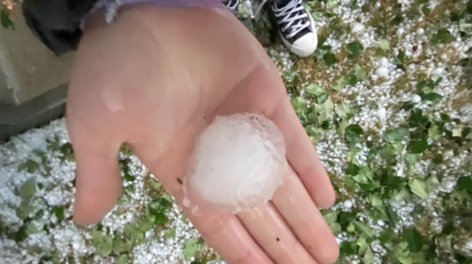
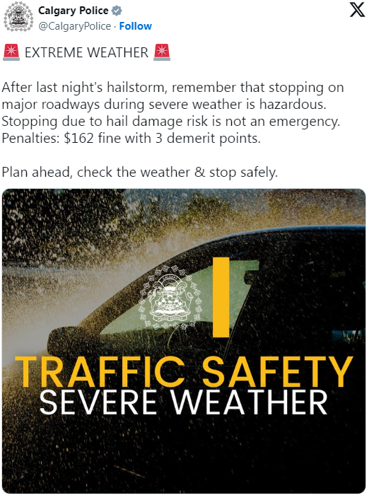

加拿大最近的天气实在是太反常了，这个环境真的是人可以生存的吗？
就在周一晚上，一场史诗级的大冰雹和暴雨袭击了卡尔加里地区，造成房屋和汽车大面积受损。加拿大环境和气候变化部门也在晚上8点左右发布了严重雷暴警报，警告即将到来的雷暴可能产生强风、棒球大小的冰雹和暴雨。

据悉这场风暴席卷了整个卡尔加里，给该市北部带来了冰雹。当冰雹开始落下时，Purneet Sohal和她的家人正好在家里，从天而降的大冰雹把客厅的窗户都给砸碎了。“一开始我们没有想到风暴这么严重，但后来冰雹开始砸在我们的窗户上，第一层玻璃碎了，然后到处都是玻璃，那是一个可怕的时刻。”

与此同时，卡尔加里西北部Evanston社区的其他房主也遭受了严重的破坏。Jason Schoepfer在这个社区住了12年，他说他从来没有见过这样的风暴。“这就像世界末日的一幕，你可以听到从西边远处传来的声音，风暴开始慢慢袭来，起初我以为是一架飞机，然后它开始越来越大，冰雹也开始砸向我们。”

这场风暴也震撼了Evanston社区的居民，Khalil Karbani 说，这让他想起了多年前发生的另一场大规模天气事件。四年前，六月的一场风暴造成了7万多起索赔和大约14亿加元的保险损失。“当这场风暴开始的时候，我以为2020年的那一幕重现了，屋顶被砸得粉碎，我们能听到很大的噪音，这对我们来说是一次可怕的经历。”Kanwal Samra则表示，周一的冰雹砸碎了他家多扇窗户，还摧毁了后院的一个棚屋，此前他的家人才刚刚翻新了部分房屋。
“我们在这个地区受到了重创。”Kanwal对那些之前没有受到恶劣天气影响的人的建议是，尽早开始保险索赔，并确保获得两个报价。除了房屋以外，不少居民在农场种植的瓜果蔬菜也是遭了殃。阿省Delacour社区的农场主Mohamed Eldaher说，他们农场的作物被毁，温室也严重受损。


“我以前从未见过这样的事情，看着自己的梦想像这样破灭，真是太令人心碎了。你知道，我们七年前开始建造这个项目，但不到一个小时，它就全毁了。”Mohamed的密友Saima Jamal现在正在组织一场筹款活动，以帮助筹集足够的资金来弥补温室的损失。

她指出，捐款非常重要，因为阿省的许多小菜农无法获得保险。“损失至少有6万到7万加元，这是一对夫妻，他们辛苦工作，可是所有劳动成果都被毁了，每个人都崩溃了。”ECCC预警和准备气象学家Alysa Pederson指出，这场风暴于周一下午晚些时候在阿尔伯塔山麓地区发展，然后向东和略东南方向穿过卡尔加里和斯特拉斯莫尔。“当我们具备了像周一这样的严重雷暴的适当成分时，我们就会看到在低冰点水平下形成的冰雹。

因此，在大气中温度大约为零的情况下，如果温度较低，我们会得到更大的冰雹，因为冰雹可以在风暴的冰点以下部分停留更长时间，它在大气中也非常不稳定，并产生这些严重的风暴。”根据加拿大环境与气候变化(ECCC)周二上午的天气摘要，最大的冰雹落在阿省皇后镇的一个小村庄，和棒球差不多大，是相当惊人的。

国家气象局表示，阿省Tilley的风力最强，那里的阵风达到每小时100公里。此外，冰雹也给当时在户外的驾车者带来了很多不便，不仅有许多车主的车被砸了大坑，还有人被迫在天桥下避难。对此，卡尔加里警方提醒司机，在恶劣天气下在主要道路上停车是危险的，可能会被罚款和记过。

警方还在一篇社交媒体帖子中表示：“因冰雹破坏风险而停车不是紧急情况。”与此同时，这场风暴还对卡尔加里机场造成了破坏，迫使B门和C门的旅客撤离。
周一，该机场宣布其国内航站楼因冰雹和强降雨造成的破坏而关闭，机场在社交媒体上发帖称，清理积水和评估损失的工作已经开始。
https://calgary.ctvnews.ca/powerful-storm-causes-damage-throughout-calgary-closing-part-of-airport-1.6989961
Severe thunderstorm damages cars, homes, windows, and airport in Calgary
https://ca.news.yahoo.com/parts-calgary-airport-closed-due-111405656.html
https://www.cbc.ca/news/canada/calgary/alberta-large-hail-emergency-alert-severe-thunderstorm-1.7285964